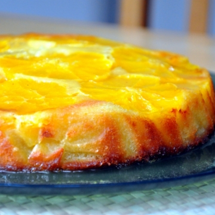
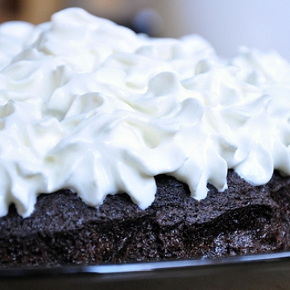
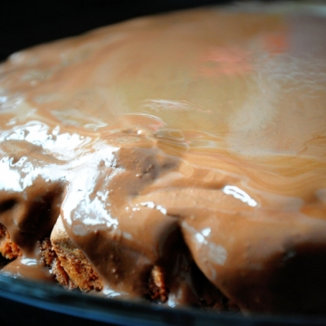

cucino.net
Marta condivide le sue ricette su cucino.net.
Registrati
per pubblicare le tue. È gratis!
Marta
Loaf con noci e cioccolato bianco
12 Mar 2013
Crostata rustica con marmellata...
25 Lug 2012
Shortbread
02 Apr 2012

Torta alle arance
04 Mar 2012

Guinness Chocolate Cake
15 Feb 2012

Torta al cioccolato gianduia
06 Feb 2012
Scones
21 Gen 2012
Dolce ungherese con le susine
29 Mag 2011
Parigine ripiene
27 Feb 2011
El bicerìn
27 Feb 2011
Dolcetti al cocco
25 Feb 2011